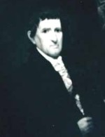

|
by Stefan Bielinski John De Peyster Douw was born in January 1756. He was the eighth of the nine children born to Volkert P. and Anna De Peyster Douw. His early years were spent in the heart of the Albany business district and then at the family farm across the Hudson. His father served as mayor of Albany during the 1760s. His maternal grandfather, namesake, and benefactor had been mayor a generation earlier. He was sent to Yale from where he is said to have graduated in 1777. Groomed to enter business under the experienced eye of his aged grandfather, John came of age himself at the onset of the Revolutionary War. Already serving as an ensign in the Rensselaerswyck company of the Albany County militia, he used his business experience in the commissary department of the Continental army. He took part in the Clinton-Sullivan expedition against the Indians in 1779. In 1782, he was appointed Albany County Surrogate. In 1788, he was elected alderman for the first ward. After living as a boarder (perhaps in the second ward home of mayor John J. Beeckman), he established a permanent residence in the State Street townhouse he had inherited from his uncle's estate in 1787. John De Peyster Douw married three times. First, in 1787, to Deborah Beekman - daughter of another Albany mayor. After her death, he wed Margaret Livingston of Dutchess County in 1795. The two marriages produced four children before Margaret's death in 1802. In 1800, his household included seven member and four slaves. In 1811, he married a much younger Catherine Gansevoort - who bore four children. He was a member and officer of the Dutch church. Trained as a lawyer, he was more defined as a merchant whose store was located on what became South Market Street. He served on a number of boards of directors and bought and sold a significant number of pieces of Albany real estate. This "gentleman of the old school" died in August 1835 at the age of seventy-nine.
Absolutely awful copy of a portrait in the collection of the Albany Institute of History and Art. Volkert and Anna had baptized a child "Johannes De Peyster Douw" in 1754. privately posted: 11/30/01; revised 10/10/08 |